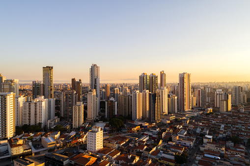
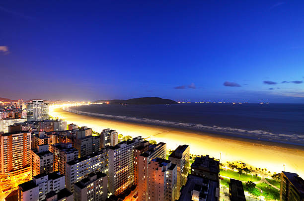
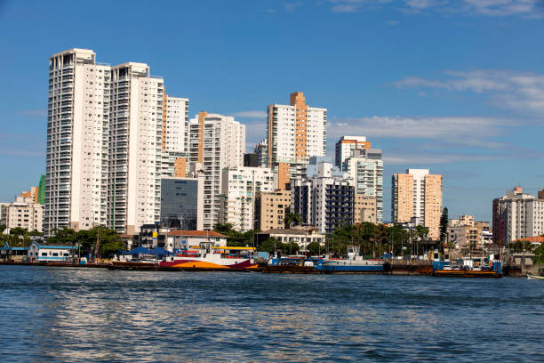
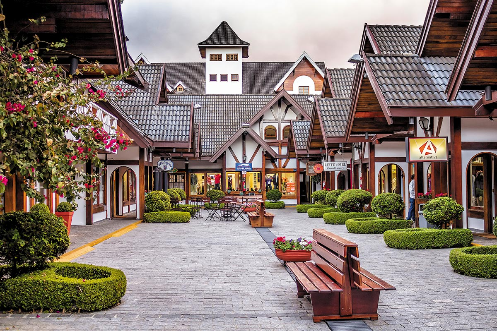
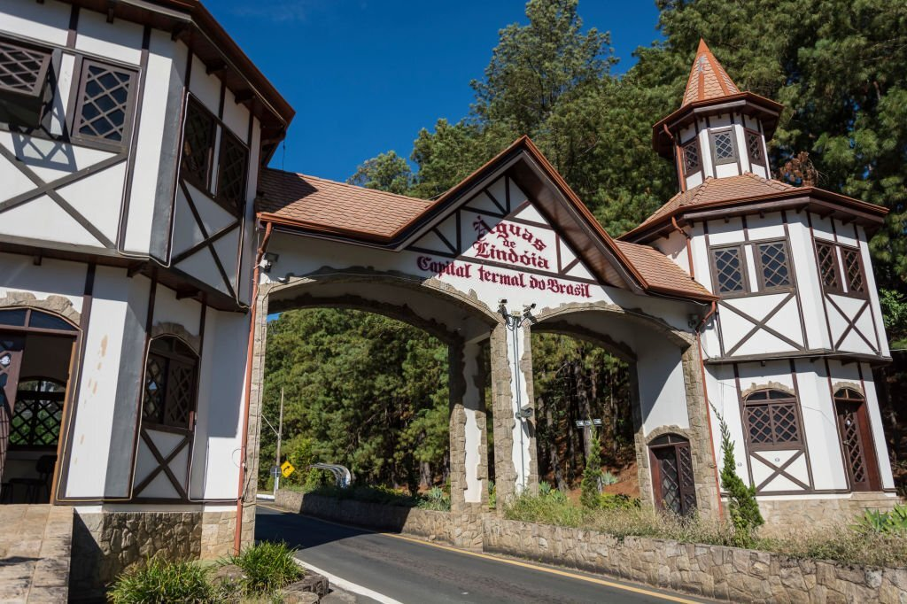
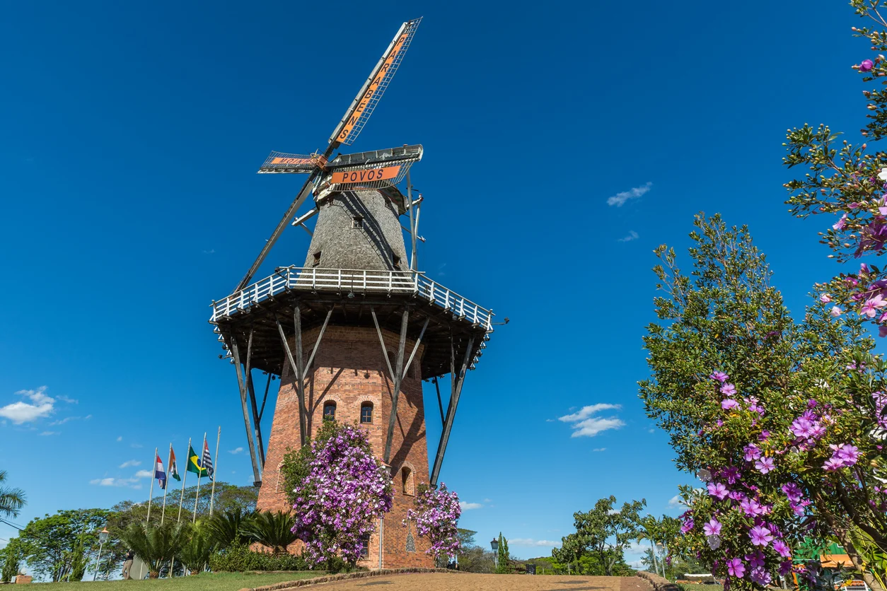
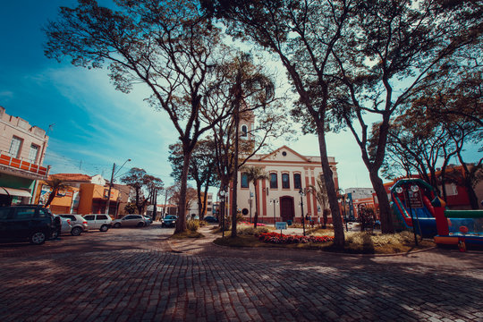
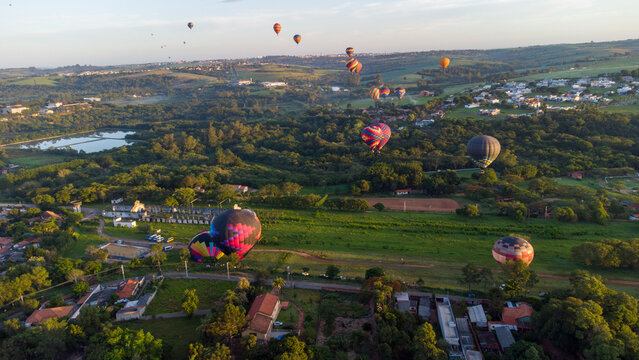
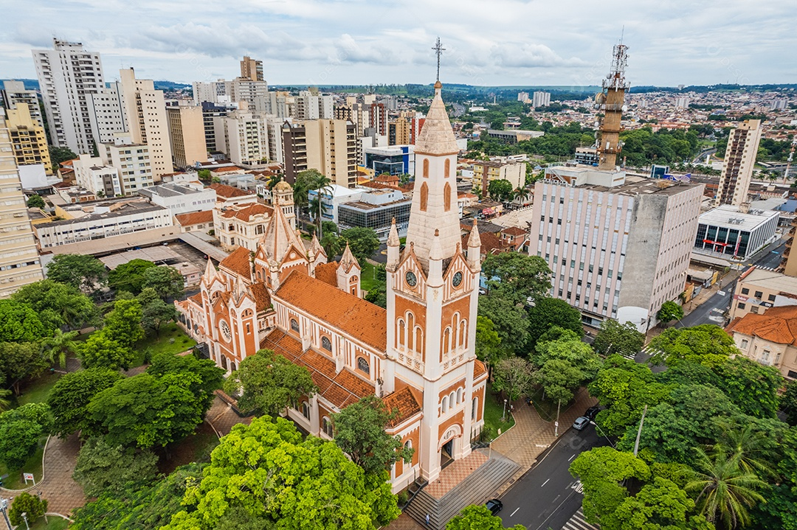

As 10 cidades mais visitadas do estado de São Paulo
São Paulo é um estado que combina uma rica diversidade de paisagens e culturas, tornando-o um destino imperdível no Brasil. Desde a agitação da metrópole da capital até as tranquilas cidades de montanha e litoral, o estado oferece experiências variadas para todos os gostos. Conhecido por sua infraestrutura, atrações culturais e belezas naturais, São Paulo atrai turistas em busca de aventura, relaxamento e cultura. Aqui estão as 10 cidades mais visitadas que você não pode perder ao explorar o estado:
São Paulo

A capital paulista é uma das maiores e mais dinâmicas metrópoles do mundo, oferecendo uma rica vida cultural com museus como o MASP, teatros renomados e uma vasta cena gastronômica. Além de suas atrações culturais, a cidade é um centro financeiro e comercial de importância global. Sugestões de Pontos Turísticos:
- Museu de Arte de São Paulo (MASP)
- Parque Ibirapuera
- Avenida Paulista
- Mercado Municipal de São Paulo
- Pinacoteca do Estado
- Bairro da Liberdade
Campinas
Campinas é conhecida por seu polo tecnológico e universidades de renome. A cidade oferece atrações naturais como o Parque Taquaral e o Jardim Botânico, além de uma vibrante vida cultural e uma rica história. É um excelente destino para quem busca tanto inovação quanto lazer. Sugestões de Pontos Turísticos:
- Parque Taquaral
- Jardim Botânico de Campinas
- Museu de História Natural de Campinas
- Catedral Metropolitana de Campinas
- Bosque dos Jequitibás
Santos
Santos é famosa por suas praias extensas e pelo porto, um dos mais movimentados do Brasil. A cidade combina o charme de sua orla com um centro histórico interessante, incluindo o Museu do Café, e é ideal para quem deseja relaxar à beira-mar e explorar um rico patrimônio cultural. Sugestões de Pontos Turísticos:
- Museu do Café
- Jardim Botânico de Santos
- Aquário de Santos
- Praia do Gonzaga
- Monumento Nacional aos Mortos da Segunda Guerra Mundial
Guarujá
Guarujá é conhecida por suas belas praias, como a Praia de Pitangueiras e a Praia da Enseada, que atraem turistas em busca de sol e mar. A cidade também possui uma infraestrutura turística desenvolvida, com diversos restaurantes e atividades para todas as idades. Sugestões de Pontos Turísticos:
- Praia da Enseada
- Praia de Pitangueiras
- Forte dos Andradas
- Parque Estadual Ilha do Cardoso
- Acqua Mundo (aquário)
Campos do Jordão
Campos do Jordão é um destino de montanha famoso por seu clima europeu e arquitetura em estilo alpino. Conhecida como a "Suíça Brasileira", a cidade oferece atrações como o Festival de Inverno e o Palácio Boa Vista, atraindo visitantes que buscam um clima mais frio e uma atmosfera charmosa. Sugestões de Pontos Turísticos:
- Palácio Boa Vista
- Festival de Inverno
- Horto Florestal
- Pico do Itapeva
- Ducha de Prata
Águas de Lindóia
Águas de Lindóia é renomada por suas águas termais e spas, sendo um destino popular para quem busca relaxamento e tratamentos de saúde. A cidade é perfeita para quem deseja uma experiência tranquila em meio à natureza e um ambiente voltado para o bem-estar. Sugestões de Pontos Turísticos:
- Parque Estadual de Águas de Lindóia
- Thermas Water Park
- Balneário Municipal
- Gruta de Nossa Senhora de Lourdes
- Praça Adhemar de Barros
Holambra
Conhecida como a "cidade das flores", Holambra é famosa por seus campos floridos e o Festival das Flores. A cidade exibe uma forte influência da cultura holandesa, com arquitetura típica e festividades que celebram a beleza e a diversidade das flores. Sugestões de Pontos Turísticos:
- Festival das Flores
- Moinho Povos Unidos
- Praça dos Pioneiros
- Cidade das Flores
- Museu de Holambra
Atibaia
Atibaia é famosa por suas belezas naturais e pelo Festival de Flores e Morangos. A cidade oferece atrações ao ar livre, como trilhas e parques, e é um ótimo destino para quem busca atividades ao ar livre e experiências culturais únicas. Sugestões de Pontos Turísticos:
- Parque Edmundo Zanoni
- Festival de Flores e Morangos
- Pedra Grande
- Cachoeira do Castelinho
- Igreja Matriz de São João Batista
Boituva
Boituva é conhecida pelo paraquedismo e outras atividades radicais. A cidade é um destino popular entre os aventureiros, oferecendo experiências emocionantes como saltos de paraquedas e voos de balão, atraindo aqueles que buscam adrenalina e aventura. Sugestões de Pontos Turísticos:
- Centro Nacional de Paraquedismo
- Parque de Diversões Boituva
- Fazenda São João (atividades ao ar livre)
- Rampa de Voo Livre
- Museu do Tropeiro
Ribeirão Preto
Ribeirão Preto é uma cidade vibrante com uma vida noturna ativa e uma rica cena cultural. Com eventos como o Festival de Jazz e uma variedade de restaurantes e bares, a cidade é ideal para quem busca entretenimento, cultura e uma gastronomia diversificada. Sugestões de Pontos Turísticos:
- Parque Curupira
- Theatro Pedro II
- Museu do Café
- Ribeirão Shopping
- Jardim Botânico de Ribeirão Preto
Descubra Mais Sobre o Brasil
Gostou das nossas sugestões? Não pare por aqui! Em nosso site, você encontrará dicas e informações sobre destinos em todo o Brasil.
- Guias de Viagem: Explore nossos artigos e crie seu roteiro personalizado com base nas suas preferências.
- Dicas e Recomendações: Saiba mais sobre os melhores lugares para visitar, dicas de transporte e muito mais.
- Entre em Contato Conosco: Tem alguma dúvida ou precisa de ajuda para planejar sua viagem? Entre em contato e nossa equipe estará pronta para ajudar!
Conecte-se Conosco Acompanhe-nos nas redes sociais para ficar por dentro das últimas novidades e interagir com a nossa comunidade de viajantes.
Obrigado por visitar nosso site. Estamos aqui para ajudar você a explorar e descobrir o melhor do Brasil!